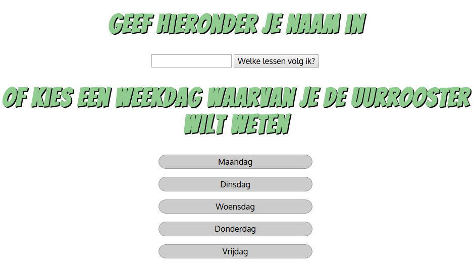

GITHUB REPOSITORY WEBAPPLICATIE
Als u hierop klikt wordt u naar de repository van mijn webapplicatie geleid.
De afbeelding hieronder geeft de startpagina van de webapplicatie weer.
Wanneer een correcte naam wordt ingegeven, zullen alle lessen worden weergegeven die deze persoon volgt samen met de bijhorende vakleerkracht.
Wanneer simpelweg op één van de weekdagen wordt geklikt, zal bijhorende lessenrooster worden weergegeven.
HOW IT ALL STARTED
IT, what does it mean to me? Well, compared to other things I like, a lot. My name is Jelle Swaelen and my first real piece of technology was my Nintendo Game Boy. I got it around the age of six and that’s when my fascination for technology started. The Nintendo Game Boy is a handheld console that, at the time I got it, was very popular. When I first started a game on the device, I was blown away, just the thought alone of having something portable that had so many different games to play really shocked me. A few years later I had almost started a collection of videogame consoles, because I really liked everything I could do with them. When I got older, I started using the PC a lot more and left the consoles behind. First I didn’t have my own laptop or desktop PC and used the so called “family PC”, which opened a whole new world of technology to me, that being the internet and being able to watch videos on YouTube. So in the early days of me using a PC I mainly visited YouTube and sites to some games that can be played in a web browser.
Now that I’m seventeen, I see technology as one of the most important things in my life. I use my smartphone and PC daily and I couldn’t imagine a world without. I usually spend at least around 2 hours a day using my PC, that number goes up quite a bit in the weekends, but I don’t only play games. Since I’ve always been interested in IT and everything around it, I chose Immaculata because it was the nearest school offering IT in the 3rd grade. So when I started the 5th year, I felt at home with all the names used in the IT courses, because I knew what most of them meant. Now I spend most of my time on the PC learning new things related to programming and computer hardware and playing games from time to time. What I also enjoy is making websites. It seems simple, but if you put enough time and effort into it, you can make a really nice finished product.

When I get older I’d love to do a job in IT and maybe even start my own company or work my way up in one that already exists. Everything about IT changes, from the parts inside a phone or computer, to the software that is used to create games or websites. That is what really fascinates me about technology, nothing remains the same forever. Every bit of progress is good, for example publishing something that you’ve been working on for a long time at the right moment and sharing it with the right people, can really get you somewhere. I definitely think there’s a bright future for this sector and I hope that one day I’ll be part of that future and help innovate technology.
IT-Tapa Office 365
Het onderwerp van de IT-Tapa is Office 365. Dit is een software pakket van Microsoft dat onder anderen Word, Powerpoint en Excel bevat. In de presentatie proberen we u zoveel mogelijk informatie te geven over hoe u OneDrive, Word en Powerpoint kan gebruiken.
Officiële Facebookpagina IT-Tapa:
Si vous avez des questions sur Office 365, vous pourrez trouver des réponses ICI.
Voici quelques questions courantes et leurs réponses.
FAQ: Que doit-on faire si on a oublié son mot de passe?
Réponse: Vous devez aller demander un nouveau mot de passe à l'administrateur de l'école.
FAQ: Comment peut-on changer son mot de passe ?
Réponse: Il n’est pas possible de changer son mot de passe, alors vous devez aller demander un nouveau mot de passe à l'administrateur de l'école.
FAQ: Comment peut-on choisir un thème dans PowerPoint?
Réponse: Vous cliquez sur le menu ‘Création’ et vous choisissez un thème.
FAQ: Comment insère-t-on un commentaire dans PowerPoint?
Réponse: Vous cliquez sur commentaires en bas de cette page.
FAQ: Où est-ce que je trouve l‘option pour changer l’espace blanc?
Réponse: Vous trouvez cela sous le mot ‘Accueil’. Ensuite cliquez sur la flèche à côté du mot ‘Paragraphe’.
FAQ: Comment cherche-t-on un mot dans un texte en utilisant Word?
Réponse: Vous appuyez sur la touche CTRL et en même temps sur la touche ‘F’. Après avoir fait ça, vous pouvez chercher un ou plusieurs mots.